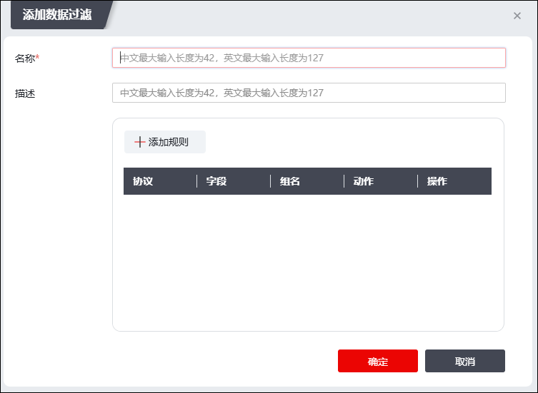
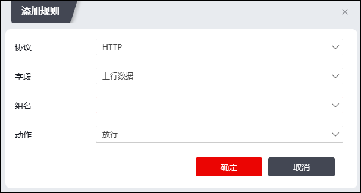

公司员工办公时使用外网的频率越来越高，例如通过Internet搜索资料、收发邮件等，可能产生如下问题：
1）不经意的上传公司内部文件，导致泄漏公司机密信息；
2）浏览、发布、传输违规信息，对公司造成不好的影响甚至带来法律风险；
3）搜索与工作无关的内容，导致工作效率下降。
基于此，NGFW提供了数据过滤功能，防止机密信息的泄露及违规信息的传输，既能保证员工正常访问Internet，又可以对员工接收和发送的信息内容进行过滤。
数据过滤是一种基于关键字过滤的安全机制，对通过防火墙的应用内容进行过滤，可对应用协议中包含的关键字进行过滤。针对基于不同协议的应用，设备过滤的内容不同，具体说明如下表所示：
应用 |
过滤内容 |
|---|---|
基于HTTP协议的应用 |
用户浏览网页的内容、使用HTTP协议下载文件。 |
基于SMTP协议的应用 |
发送的邮件的标题、正文和附件名称，并支持发送者和接收者信息的过滤。 |
基于POP3协议的应用 |
接收的邮件的标题、正文和附件名称，并支持发送者和接收者信息的过滤。 |
基于FTP协议的应用 |
对上传和下载文件的名称进行过滤，对FTP命令进行过滤。 |
基于TELNET协议的应用 |
关键字。 |
当通过设备的数据报文匹配一条访问控制策略，策略的动作为允许且引用了数据过滤策略时，该数据报文需要进行数据过滤检测。具体处理流程为：
1）设备对数据报文的协议进行检测，识别出报文的内容。
此时如果识别出报文协议，NGFW会根据不同协议的限定字段进一步识别不同字段的报文内容。
2）设备将数据报文的内容属性与数据过滤策略的关键字组进行匹配。
如果所有条件都匹配，则此内容成功匹配该策略；如果其中有一个条件不匹配，则继续执行下一条策略，以此类推。如果所有数据过滤策略都不匹配，则设备会允许此条报文通过。
3）如果数据报文的内容成功匹配一条数据过滤策略，则设备对报文内容进行关键字检测，检测内容中是否存在数据过滤策略定义的关键字。如果识别出关键字，则设备会执行响应动作；否则，设备允许该报文通过。
数据过滤策略决定了对哪些协议及字段进行过滤；定义数据过滤策略时引用关键字组，NGFW即可对通过设备传输的不同协议的内容进行过滤。当数据报文匹配关键字组中的具体关键字时，按照关键字的权限进行处理。通过配置数据过滤策略，并且在访问控制规则中引用该策略，NGFW可以实现对应用层的检测和控制。关于访问控制规则的设置具体请参见 配置访问控制规则。
在配置数据过滤策略之前，需要先进行关键字组的配置，关于关键字组的设置具体请参见 关键字组。
| 步骤1 | 选择 。 |
| 步骤2 | 点击“添加”，弹出“添加数据过滤”窗口，如下图所示。 |

在设置数据过滤规则时，各项参数的具体说明如下表所示。
参数 |
说明 |
|---|---|
名称 |
必选项，设置数据过滤规则的名称。名称必须是唯一的，当配置安全策略时，名称会出现在“数据过滤”的参数选择列表中。 |
描述 |
设置数据过滤策略的具体说明信息。合理填写描述信息有助于管理员正确理解数据过滤策略的功能。 |
规则 |
设置数据过滤的规则。详见步骤3。 |

在添加规则时，各项参数的具体说明如下表所示。
参数 |
说明 |
|---|---|
协议 |
必选项，设置规则的应用协议类型。可选项：HTTP、FTP、TELNET、SMTP、POP3。 |
字段 |
必选项，设置对满足规则的数据报文进行上传还是下载。 当“协议”选择为HTTP时，可选项：上行数据、下行数据。 当“协议”选择为FTP时，可选项：上行数据、下行数据、命令。 当“协议”选择为TELNET时，可选项：none。 当“协议”选择为SMTP或POP3时，可选项：发件人、收件人、抄送人、主题、正文、附件。 |
组名 |
必选项，设置关联的关键字组，关于关键字组的配置具体请参见 关键字组。 |
动作 |
必选项，配置规则的执行动作。可选项：放行、阻断、告警。 Ø放行：表示当识别出关键字后，允许内容传输并记录日志。 Ø阻断：表示当识别出关键字后，阻断内容传输并记录日志。在用户看来则是无法显示网页、上传或下载文件失败、邮件发送或接收失败。 Ø告警：表示当识别出关键字后，记录日志但不阻断内容传输。 |
| 步骤4 | 点击【确定】按钮完成数据过滤规则的添加。 |